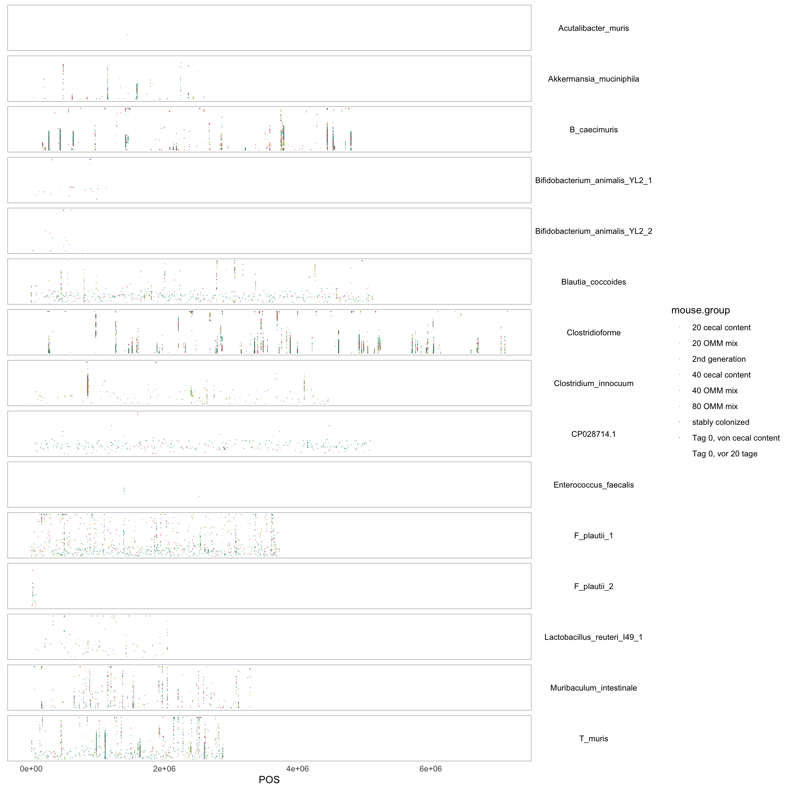
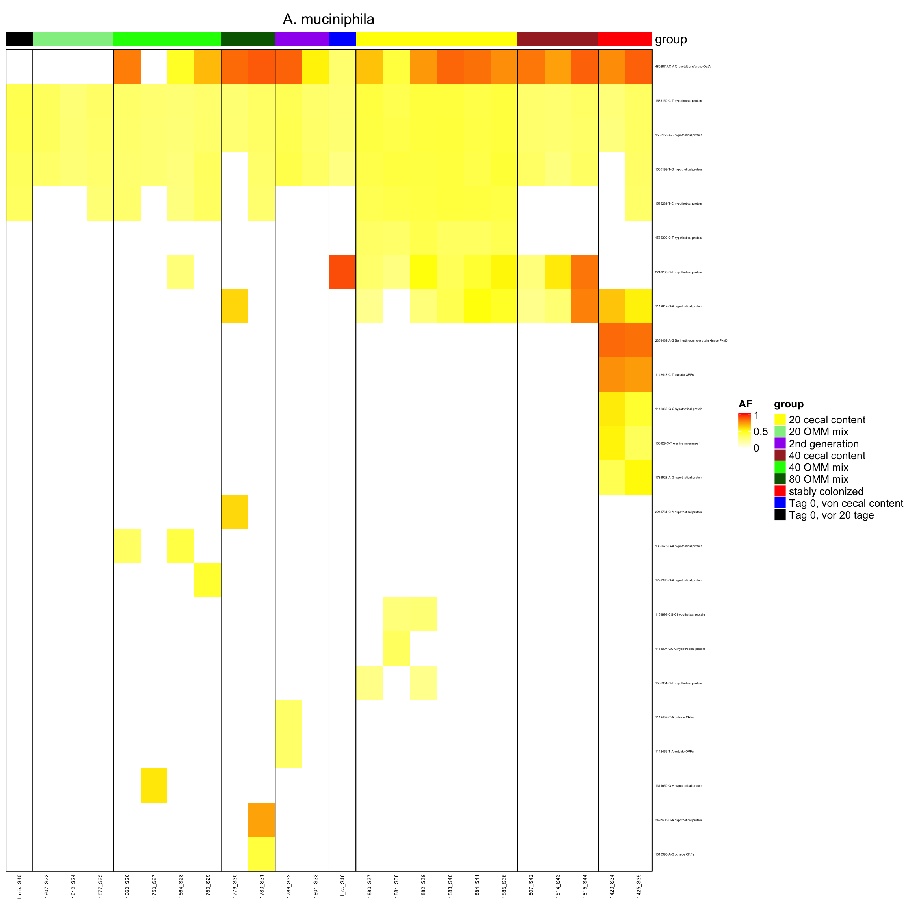

Section 3 Resequencing
3.1 Metadata
| Sample | Genome | Group | Species |
|---|---|---|---|
| DR4 | KB1 | 1687 | Enterococcus_faecalis |
| DR1 | KB1 | 1681 | Enterococcus_faecalis |
| DR8 | KB1 | 1691 | Enterococcus_faecalis |
| DR11 | KB1 | 1696 | Enterococcus_faecalis |
| DR3 | I46 | 1681 | Clostridium_innocuum |
| DR6 | I46 | 1687 | Clostridium_innocuum |
| DR10 | I46 | 1691 | Clostridium_innocuum |
| DR12 | I46 | 1696 | Clostridium_innocuum |
| DR7 | YL58 | 1687 | Blautia_coccoides |
| DR13 | YL58 | 1696 | Blautia_coccoides |
3.2 Load in variants
source("utils.R")
orf_shapes = c(coding = 15, `non-coding` = 3)
vcfToDataframe <- function(vcf.files, contig_mapping = read.csv2("data/contig_genome_mapping.csv"),
gff.df = gff.df, varscan = F) {
require(vcfR)
res <- list()
for (file in vcf.files) {
# message(file)
vcf.content <- vcfR::read.vcfR(file, verbose = FALSE)
vcf.fix <- as.data.frame(vcf.content@fix) # contains chr, position and substitution informations
vcf.info <- vcfR::INFO2df(vcf.content) # get INFO field, contains DP, AF informations
# no annotation since they are not yet processed with snpEff vcf.ann <-
# data.frame(do.call('rbind', strsplit(as.character(vcf.info$ANN),'|',fixed =
# TRUE))) # split ANN field, contains information if files are processed by
# snpEff there are variants
if (nrow(vcf.fix) > 0) {
dat <- as.data.frame(cbind(vcf.fix[, c(1, 2, 4, 5, 6)], vcf.info[, c(1,
2)]))
dat$majorAF <- sapply(dat$AF, minorAfToMajorAf) # transforms e.g. AF of 0.1 to 0.9, 0.9 stays 0.9 and 0.5 stays 0.5
dat$genome <- contig_mapping[match(dat$CHROM, contig_mapping$contig),
]$genome # map chr information to genome name e.g. NHMU01000001.1 -> i48
dat$genome_hr <- translateGenomeIdToFullName(tolower(dat$genome))
dat$mouse.id <- translateSampletoMouse(tools::file_path_sans_ext(basename(file)))
dat$mouse.group <- translateMouseIdToTreatmentGroup(translateSampletoMouse(tools::file_path_sans_ext(basename(file))))
dat$dp <- as.numeric(as.matrix(vcf.info$DP))
# print(summary(dat$AF)) print(summary(dat$DP)) dat$vartype <-
# as.character(as.matrix(vcf.ann$X2)) dat$effect <-
# as.character(as.matrix(vcf.ann$X3)) dat$substitution <-
# as.character(as.matrix(vcf.ann$X11)) annotate overlay of gene
dat$orf_desc <- as.character(as.matrix(apply(dat, 1, getGeneByPosition,
gff = gff, pos.column = 2, chr.column = 1)))
res[[tools::file_path_sans_ext(basename(file))]] <- dat # add vcf df to list
} else {
message("Skipping")
}
}
df <- as.data.frame(do.call(rbind, res)) # merge list to df
return(df)
}gff.files <- Sys.glob("data/references/gff/*.gff")
gff.df <- NULL
for (gff.file in gff.files) {
message(gff.file)
gff <- rtracklayer::readGFF(gff.file)
# subset since different columns are present on gff files
relevant <- data.frame(start = gff$start, end = gff$end, type = as.character(as.matrix(gff$type)),
gene = as.character(as.matrix(gff$gene)), product = as.character(as.matrix(gff$product)),
chr = as.character(as.matrix(gff$seqid)))
relevant$genome <- substr(basename(gff.file), 1, nchar(basename(gff.file)) -
4)
gff.df <- rbind(gff.df, relevant)
}## data/references/gff/I46.gff## data/references/gff/KB1.gff## data/references/gff/YL58.gffcontig_mapping <- read.csv2("data/contig_mapping_new_ref.csv", sep = ";", header = T,
stringsAsFactors = F) # this file contains contig names of the 12 OligoMM genomes
vcf.files <- Sys.glob("reseq/vcf_files/*.vcf")
vcf.samples <- suppressWarnings(vcfToDataframe(vcf.files, contig_mapping, gff.df = gff.df))## Loading required package: dplyr##
## Attaching package: 'dplyr'## The following objects are masked from 'package:GenomicRanges':
##
## intersect, setdiff, union## The following object is masked from 'package:GenomeInfoDb':
##
## intersect## The following objects are masked from 'package:IRanges':
##
## collapse, desc, intersect, setdiff, slice, union## The following objects are masked from 'package:S4Vectors':
##
## first, intersect, rename, setdiff, setequal, union## The following objects are masked from 'package:BiocGenerics':
##
## combine, intersect, setdiff, union## The following object is masked from 'package:kableExtra':
##
## group_rows## The following objects are masked from 'package:stats':
##
## filter, lag## The following objects are masked from 'package:base':
##
## intersect, setdiff, setequal, unionvcf.samples$mouse.id <- as.character(as.matrix(vcf.samples$mouse.id))
vcf.samples[which(vcf.samples$orf_desc == "character(0)"), ]$orf_desc <- "outside ORFs"
vcf.samples[which(vcf.samples$orf_desc == "hypothetical protein"), ]$orf_desc <- "hypothetical proteins"
saveRDS(vcf.samples, file = "data/rds/reseq.rds")p <- ggplot(vcf.samples, aes(AF, fill = genome)) + geom_histogram()
p <- p + facet_grid(mouse.id + mouse.group ~ genome + genome_hr)
p <- p + theme_classic() + xlab("AF") + ylab("occurence")
print(p)## `stat_bin()` using `bins = 30`. Pick better value with `binwidth`.
Figure 3.1: AF of resequenced strains
p <- ggplot(vcf.samples, aes(majorAF, fill = genome)) + geom_histogram()
p <- p + facet_grid(mouse.id + mouse.group ~ genome + genome_hr)
p <- p + theme_classic() + xlab("AF") + ylab("occurence")
print(p)## `stat_bin()` using `bins = 30`. Pick better value with `binwidth`.
Figure 3.2: major AF of resequenced strains
dat <- readRDS("data/rds/reseq.rds")
write.table(dat, file = "data/tables/reseq_all.tsv", sep = "\t", row.names = F, quote = F)pairedAFplot <- function(dat = dat, case = "Water", control = "Ciprofloxacin") {
require(reshape2)
require(ggplot2)
dat.pair <- dat[which(dat$mouse.group == case | dat$mouse.group == control),
]
# dat.pair <- dat.pair[which(dat.pair$genome == genome),]
# dat.pair <- dat.pair[which(!is.na(dat.pair$orf_desc)),]
data.wide <- dcast(dat.pair, genome + POS + REF + ALT + orf_desc ~ mouse.group,
value.var = "AF")
data.wide$vartype <- ifelse(as.character(data.wide$orf_desc) != "outside ORFs",
"coding", "non-coding")
data.wide <- data.wide[which(data.wide$vartype != 0), ]
colnames(data.wide)[6] <- "sample_1"
colnames(data.wide)[7] <- "sample_2"
data.wide[is.na(data.wide)] <- 0
p <- ggplot(data.wide, aes(x = sample_1, y = sample_2, label = orf_desc, color = genome,
shape = vartype))
p <- p + geom_point(fill = NA) + theme_classic() # + scale_color_manual(values = omm_colors)
p <- p + theme(aspect.ratio = 1)
p <- p + geom_hline(yintercept = 0.5, linetype = 2, color = "grey50")
p <- p + geom_vline(xintercept = 0.5, linetype = 2, color = "grey50")
p <- p + scale_shape_manual(values = orf_shapes)
p <- p + theme(aspect.ratio = 1)
p <- p + theme(strip.background = element_blank())
p <- p + geom_abline(intercept = 0, slope = 1)
p <- p + xlab(case) + ylab(control)
p <- p + theme(panel.border = element_rect(colour = "black", fill = NA, size = 1))
return(p)
}Figure 3.3: Scatter plot of AF of two samples. Only variants with functional annotation are shown
Figure 3.4: Scatter plot of AF of two samples. Only variants with functional annotation are shown
Figure 3.5: Scatter plot of AF of two samples. Only variants with functional annotation are shown
dat <- readRDS("data/rds/reseq.rds")
dat$ref_size <- nchar(as.character(as.matrix(dat$REF)))
dat$alt_size <- nchar(as.character(as.matrix(dat$ALT)))
dat$alteration <- paste(as.character(dat$REF), "->", as.character(dat$ALT))# no grid version for html
geneCentricPlot2 <- function(dat = dat, genome = "KB1", type = "SNP") {
require(reshape2)
require(ggplot2)
dat.subset <- dat[which(dat$genome == genome), ]
if (type == "SNP") {
dat.subset <- dat.subset[which(dat.subset$ref_size == 1 & dat.subset$alt_size ==
1), ]
} else if (type == "insertion") {
dat.subset <- dat.subset[which(dat.subset$ref_size == 1 & dat.subset$alt_size >
1), ]
} else {
# deletion
dat.subset <- dat.subset[which(dat.subset$ref_size > 1 & dat.subset$alt_size ==
1), ]
}
dat.subset$ID <- paste0(dat.subset$POS, "|", dat.subset$REF, "->", dat.subset$ALT)
p <- ggplot(dat.subset, aes(x = orf_desc, y = AF, color = mouse.group, label = alteration))
p <- p + geom_point(size = 2, fill = NA)
p <- p + coord_flip() + theme_classic()
p <- p + ylim(c(0, 1))
p <- p + theme(strip.background = element_blank()) + theme(strip.text.y = element_text(angle = 0),
strip.placement = "outside")
p <- p + xlab("") + ylab("allele frequency")
return(p)
}3.3 KB1
3.3.1 SNP
Figure 3.6: AF by function of one genome
3.3.2 insertion
Figure 3.7: AF by function of one genome
3.4 I46
3.4.1 SNP
Figure 3.9: AF by function of one genome
3.4.2 insertion
Figure 3.10: AF by function of one genome
3.5 YL58
3.5.1 SNP
Figure 3.12: AF by function of one genome
3.5.2 insertion
Figure 3.13: AF by function of one genome
3.6 mutation bias?
3.6.1 SNP
dat <- readRDS("data/rds/reseq.rds")
dat$ref_size <- nchar(as.character(as.matrix(dat$REF)))
dat$alt_size <- nchar(as.character(as.matrix(dat$ALT)))
dat <- dat[which(dat$ref_size == 1 & dat$alt_size == 1), ]
dat$alteration <- paste(as.character(dat$REF), "->", as.character(dat$ALT))
dat$dummy <- 1
dat.agg <- aggregate(dummy ~ genome + mouse.group + alteration, dat, sum)
p <- ggplot(dat.agg, aes(x = mouse.group, y = dummy, label = alteration, color = genome))
p <- p + geom_text() + facet_grid(~genome) + ylab("occurrence")
p <- p + stat_summary(fun.y = mean, geom = "line", aes(group = alteration), alpha = 0.1)
p <- p + theme_classic() # + scale_color_manual(values = omm_colors)
ggplotly(p)3.6.2 insertions
dat <- readRDS("data/rds/reseq.rds")
dat$ref_size <- nchar(as.character(as.matrix(dat$REF)))
dat$alt_size <- nchar(as.character(as.matrix(dat$ALT)))
dat <- dat[which(dat$alt_size > dat$ref_size), ]
dat$alteration <- paste(as.character(dat$REF), "->", as.character(dat$ALT))
dat$dummy <- 1
dat.agg <- aggregate(dummy ~ genome + mouse.group + alteration, dat, sum)
p <- ggplot(dat.agg, aes(x = mouse.group, y = dummy, label = alteration, color = genome))
p <- p + geom_text() + facet_grid(~genome) + ylab("occurrence")
p <- p + stat_summary(fun.y = mean, geom = "line", aes(group = alteration), alpha = 0.1)
p <- p + theme_classic() # + scale_color_manual(values = omm_colors)
ggplotly(p)3.6.3 deletions
dat <- readRDS("data/rds/reseq.rds")
dat$ref_size <- nchar(as.character(as.matrix(dat$REF)))
dat$alt_size <- nchar(as.character(as.matrix(dat$ALT)))
dat <- dat[which(dat$alt_size < dat$ref_size), ]
dat$alteration <- paste(as.character(dat$REF), "->", as.character(dat$ALT))
dat$dummy <- 1
dat.agg <- aggregate(dummy ~ genome + mouse.group + alteration, dat, sum)
p <- ggplot(dat.agg, aes(x = mouse.group, y = dummy, label = alteration, color = genome))
p <- p + geom_text() + facet_grid(~genome) + ylab("occurrence")
p <- p + stat_summary(fun.y = mean, geom = "line", aes(group = alteration), alpha = 0.1)
p <- p + theme_classic() # + scale_color_manual(values = omm_colors)
ggplotly(p)3.7 heatmap
3.7.1 KB1
dat <- readRDS("data/rds/reseq.rds")
# dat <- dat[which(dat$mouse.group == 'Water' | dat$mouse.group == 'Tetracyclin'
# ),]
data.wide <- dcast(dat, genome + POS + REF + ALT + orf_desc ~ mouse.group, value.var = "AF")
data.wide <- data.wide[which(data.wide$genome == "KB1"), ]
rownames(data.wide) <- paste0(data.wide$POS, "-", data.wide$REF, "-", data.wide$ALT)
heat <- data.matrix(data.wide[, 6:9])
library(circlize)## ========================================
## circlize version 0.4.8
## CRAN page: https://cran.r-project.org/package=circlize
## Github page: https://github.com/jokergoo/circlize
## Documentation: http://jokergoo.github.io/circlize_book/book/
##
## If you use it in published research, please cite:
## Gu, Z. circlize implements and enhances circular visualization
## in R. Bioinformatics 2014.
## ========================================## Loading required package: grid## ========================================
## ComplexHeatmap version 2.2.0
## Bioconductor page: http://bioconductor.org/packages/ComplexHeatmap/
## Github page: https://github.com/jokergoo/ComplexHeatmap
## Documentation: http://jokergoo.github.io/ComplexHeatmap-reference
##
## If you use it in published research, please cite:
## Gu, Z. Complex heatmaps reveal patterns and correlations in multidimensional
## genomic data. Bioinformatics 2016.
## ========================================##
## Attaching package: 'ComplexHeatmap'## The following object is masked from 'package:plotly':
##
## add_heatmapheat[is.na(heat)] <- 0
col_fun = colorRamp2(c(0, 0.5, 1), c("white", "yellow", "red"))
Heatmap(heat, name = "AF", col = col_fun, column_names_gp = gpar(fontsize = 15),
row_names_gp = gpar(fontsize = 3), show_row_dend = F, show_row_names = F, show_column_dend = F)
3.7.2 I46
dat <- readRDS("data/rds/reseq.rds")
# dat <- dat[which(dat$mouse.group == 'Water' | dat$mouse.group == 'Tetracyclin'
# ),]
data.wide <- dcast(dat, genome + POS + REF + ALT + orf_desc ~ mouse.group, value.var = "AF")
data.wide <- data.wide[which(data.wide$genome == "I46"), ]
rownames(data.wide) <- paste0(data.wide$POS, "-", data.wide$REF, "-", data.wide$ALT)
heat <- data.matrix(data.wide[, 6:9])
library(circlize)
library(ComplexHeatmap)
heat[is.na(heat)] <- 0
col_fun = colorRamp2(c(0, 0.5, 1), c("white", "yellow", "red"))
Heatmap(heat, name = "AF", col = col_fun, column_names_gp = gpar(fontsize = 15),
row_names_gp = gpar(fontsize = 9), show_row_names = F, show_row_dend = F, show_column_dend = F)
3.7.3 YL58
dat <- readRDS("data/rds/reseq.rds")
# dat <- dat[which(dat$mouse.group == 'Water' | dat$mouse.group == 'Tetracyclin'
# ),]
data.wide <- dcast(dat, genome + POS + REF + ALT + orf_desc ~ mouse.group, value.var = "AF")
data.wide <- data.wide[which(data.wide$genome == "YL58"), ]
rownames(data.wide) <- paste0(data.wide$POS, "-", data.wide$REF, "-", data.wide$ALT)
heat <- data.matrix(data.wide[, 6:9])
library(circlize)
library(ComplexHeatmap)
heat[is.na(heat)] <- 0
col_fun = colorRamp2(c(0, 0.5, 1), c("white", "yellow", "red"))
Heatmap(heat, name = "AF", col = col_fun, column_names_gp = gpar(fontsize = 9), row_names_gp = gpar(fontsize = 9),
show_row_dend = F, show_row_names = F, show_column_dend = F)
3.7.4 Filter: present in all
3.7.5 KB1
dat <- readRDS("data/rds/reseq.rds")
# dat <- dat[which(dat$mouse.group == 'Water' | dat$mouse.group == 'Tetracyclin'
# ),]
data.wide <- dcast(dat, genome + POS + REF + ALT + orf_desc ~ mouse.group, value.var = "AF")
data.wide <- data.wide[which(data.wide$genome == "KB1"), ]
rownames(data.wide) <- paste0(data.wide$POS, " (", data.wide$REF, " -> ", data.wide$ALT,
") ", data.wide$orf_desc)
heat <- data.matrix(data.wide[, 6:9])
heat <- heat[which(rowSums(!is.na(heat)) > 2), ] # filter uncommon
library(circlize)
library(ComplexHeatmap)
heat[is.na(heat)] <- 0
col_fun = colorRamp2(c(0, 0.5, 1), c("white", "yellow", "red"))
Heatmap(heat, name = "AF", col = col_fun, column_names_gp = gpar(fontsize = 9), row_names_gp = gpar(fontsize = 9),
show_row_dend = F, show_row_names = T, show_column_dend = F)
3.7.6 YL58
dat <- readRDS("data/rds/reseq.rds")
# dat <- dat[which(dat$mouse.group == 'Water' | dat$mouse.group == 'Tetracyclin'
# ),]
data.wide <- dcast(dat, genome + POS + REF + ALT + orf_desc ~ mouse.group, value.var = "AF")
data.wide <- data.wide[which(data.wide$genome == "YL58"), ]
rownames(data.wide) <- paste0(data.wide$POS, " (", data.wide$REF, " -> ", data.wide$ALT,
") ", data.wide$orf_desc)
heat <- data.matrix(data.wide[, 6:9])
heat <- heat[which(rowSums(!is.na(heat)) > 2), ] # filter uncommon
library(circlize)
library(ComplexHeatmap)
heat[is.na(heat)] <- 0
col_fun = colorRamp2(c(0, 0.5, 1), c("white", "yellow", "red"))
Heatmap(heat, name = "AF", col = col_fun, column_names_gp = gpar(fontsize = 9), row_names_gp = gpar(fontsize = 9),
show_row_dend = F, show_row_names = T, show_column_dend = F)
3.7.7 I46
dat <- readRDS("data/rds/reseq.rds")
# dat <- dat[which(dat$mouse.group == 'Water' | dat$mouse.group == 'Tetracyclin'
# ),]
data.wide <- dcast(dat, genome + POS + REF + ALT + orf_desc ~ mouse.group, value.var = "AF")
data.wide <- data.wide[which(data.wide$genome == "I46"), ]
rownames(data.wide) <- paste0(data.wide$POS, " (", data.wide$REF, " -> ", data.wide$ALT,
") ", data.wide$orf_desc)
heat <- data.matrix(data.wide[, 6:9])
heat <- heat[which(rowSums(!is.na(heat)) > 2), ] # filter uncommon
library(circlize)
library(ComplexHeatmap)
heat[is.na(heat)] <- 0
col_fun = colorRamp2(c(0, 0.5, 1), c("white", "yellow", "red"))
Heatmap(heat, name = "AF", col = col_fun, column_names_gp = gpar(fontsize = 9), row_names_gp = gpar(fontsize = 9),
show_row_dend = F, show_row_names = T, show_column_dend = F)
3.7.8 Filter: not in water but in AB
3.7.9 KB1
dat <- readRDS("data/rds/reseq.rds")
# dat <- dat[which(dat$mouse.group == 'Water' | dat$mouse.group == 'Tetracyclin'
# ),]
data.wide <- dcast(dat, genome + POS + REF + ALT + orf_desc ~ mouse.group, value.var = "AF")
data.wide <- data.wide[which(data.wide$genome == "KB1"), ]
rownames(data.wide) <- paste0(data.wide$POS, " (", data.wide$REF, " -> ", data.wide$ALT,
") ", data.wide$orf_desc)
heat <- data.wide[, 6:9]
heat[is.na(heat)] <- 0
heat <- heat[which(heat$Water < 0.5 & (heat$Ciprofloxacin > 0.5 | heat$Tetracyclin >
0.5 | heat$Vancomycin > 0.5)), ] # filter water
heat <- data.matrix(heat)
library(circlize)
library(ComplexHeatmap)
heat[is.na(heat)] <- 0
col_fun = colorRamp2(c(0, 0.5, 1), c("white", "yellow", "red"))
Heatmap(heat, name = "AF", col = col_fun, column_names_gp = gpar(fontsize = 9), row_names_gp = gpar(fontsize = 9),
show_row_dend = F, show_row_names = T, show_column_dend = F)
3.7.10 YL58
dat <- readRDS("data/rds/reseq.rds")
# dat <- dat[which(dat$mouse.group == 'Water' | dat$mouse.group == 'Tetracyclin'
# ),]
data.wide <- dcast(dat, genome + POS + REF + ALT + orf_desc ~ mouse.group, value.var = "AF")
data.wide <- data.wide[which(data.wide$genome == "YL58"), ]
rownames(data.wide) <- paste0(data.wide$POS, " (", data.wide$REF, " -> ", data.wide$ALT,
") ", data.wide$orf_desc)
heat <- data.wide[, 6:9]
heat[is.na(heat)] <- 0
heat <- heat[which(heat$Water < 0.5 & (heat$Ciprofloxacin > 0.5 | heat$Tetracyclin >
0.5 | heat$Vancomycin > 0.5)), ] # filter water
heat <- data.matrix(heat)
library(circlize)
library(ComplexHeatmap)
heat[is.na(heat)] <- 0
col_fun = colorRamp2(c(0, 0.5, 1), c("white", "yellow", "red"))
Heatmap(heat, name = "AF", col = col_fun, column_names_gp = gpar(fontsize = 9), row_names_gp = gpar(fontsize = 9),
show_row_dend = F, show_row_names = T, show_column_dend = F)
3.7.11 I46
dat <- readRDS("data/rds/reseq.rds")
# dat <- dat[which(dat$mouse.group == 'Water' | dat$mouse.group == 'Tetracyclin'
# ),]
data.wide <- dcast(dat, genome + POS + REF + ALT + orf_desc ~ mouse.group, value.var = "AF")
data.wide <- data.wide[which(data.wide$genome == "I46"), ]
rownames(data.wide) <- paste0(data.wide$POS, " (", data.wide$REF, " -> ", data.wide$ALT,
") ", data.wide$orf_desc)
heat <- data.wide[, 6:9]
heat[is.na(heat)] <- 0
heat <- heat[which(heat$Water < 0.5 & (heat$Ciprofloxacin > 0.5 | heat$Tetracyclin >
0.5 | heat$Vancomycin > 0.5)), ] # filter water
heat <- data.matrix(heat)
library(circlize)
library(ComplexHeatmap)
heat[is.na(heat)] <- 0
col_fun = colorRamp2(c(0, 0.5, 1), c("white", "yellow", "red"))
Heatmap(heat, name = "AF", col = col_fun, column_names_gp = gpar(fontsize = 9), row_names_gp = gpar(fontsize = 9),
show_row_dend = F, show_row_names = T, show_column_dend = F)